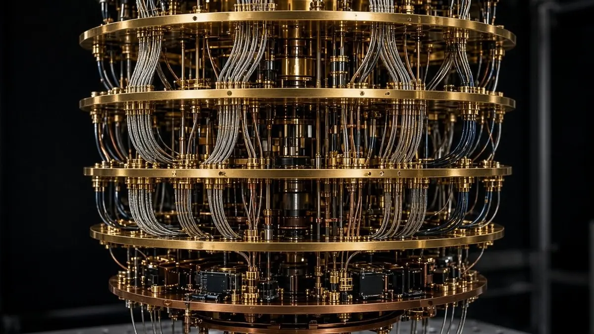

Alice & Bob says 22,593 cat qubits could factor RSA-2048 in 3.14 days, in a new estimate
Short answer: Alice & Bob, the Paris- and Boston-based company building superconducting "cat qubit" processors, estimates that a machine on its architecture could factor a 2048-bit RSA number with 22,593 physical qubits running for 3.14 days. The figure comes from a ten-author preprint posted to the IACR Cryptology ePrint Archive (2026/2665) on 28 October, which the company described in a blog post as "about 23 000 physical qubits and about three days to break RSA-2048." It is a resource estimate, not an attack run on real hardware.
A cat qubit stores information in a superconducting resonator holding many photons. Alice & Bob's design suppresses bit flips, where a qubit's 0 turns into 1 or the reverse, in the hardware itself, so the error-correcting code layered on top only has to catch phase flips. That is why the company can claim far fewer physical qubits per logical qubit than designs that must correct both kinds of error. For the difference between the two, see our explainer on what a logical qubit is.

According to Quantum Brief, the company credits three changes for the lower count: the cat qubits themselves, LDPC-cat codes published in 2024 that replace the repetition code used in its 2023 estimate, and a rebuilt adder that runs at a steady clock instead of pausing to wait on error-correction results. The switch to LDPC-cat codes alone took the RSA-2048 count from 49,649 to 22,593, according to Alice & Bob's release.
The headline number rests on four stated assumptions: an error-correction cycle of 1 microsecond, a 10-microsecond reaction time for the classical decoder, a phase-flip probability of 5×10-4, and no bit flips at all. Alice & Bob's notes to editors say zero bit flips is equivalent to a bit-flip time of about a century, and that if bit flips arrived about once an hour, RSA-2048 would need roughly 45,000 qubits.
The design can also trade size for speed. Spread across 610,530 cat qubits in ten machines, the RSA-2048 job would take about 1.25 hours, while 21,188 qubits would stretch it to 8.08 days, according to the paper's trade-off table as reported by Quantum Brief. The same paper puts the 256-bit elliptic-curve discrete logarithm, which underpins ECDSA signatures and ECDH key exchange, at no more than 29,588 physical qubits and 61.8 minutes.
For context, Craig Gidney and Martin Ekerå put RSA-2048 at about 20 million physical qubits in 2019, and Gidney, at Google Quantum AI, brought it below one million in 2025, figures Alice & Bob cites in its own post. The company says its new figure needs about 40 times fewer physical qubits than Gidney's 2025 estimate, under different hardware assumptions. In October Iceberg Quantum put the figure at about 48,000 physical qubits for its own architecture; see our report on Pinnacle 1.2. The Quantum Insider also covered the estimate.
Sources
- Alice & Bob: Our estimate for factoring RSA-2048 with cat qubits: pushing the frontier between size and speed
- Quantum Brief: Alice & Bob's 22,593-qubit RSA-2048 estimate, and what it assumes (30 Oct 2026)
- The Quantum Insider: Alice & Bob Estimates 22,593 Qubits to Break RSA-2048 (29 Oct 2026)
- IACR Cryptology ePrint Archive 2026/2665: Shor's algorithm compiled on cat qubits: 22 593 qubits for RSA-2048 in 3.14 days